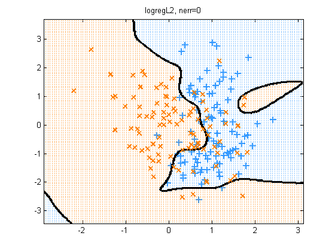
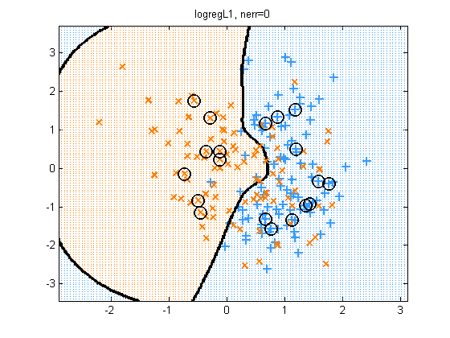
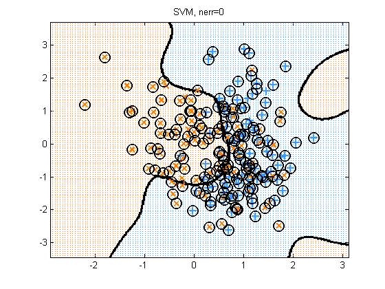

Compare SVM and kernelized logreg on synthetic 2 class data in 2d
Contents
Load Data
Load synthetic data generated from a mixture of 2 Gaussians. Source: http://research.microsoft.com/~cmbishop/PRML/webdatasets/datasets.htm
See also hastieSvmLrDemo
loadData('bishop2class'); y = Y(:); %X = mkUnitVariance(centerCols(X));
Set up kernels
We pick hyperparameters that result in a pretty plot
lambda = 2;
rbfScale = 0.3;
gamma = 1/(2*rbfScale^2);
kernelFn = @kernelRbfSigma;
Ktrain = kernelFn(X, X, rbfScale);
logregArgs.lambda = lambda;
logregArgs.regType = 'L2';
logregArgs.preproc.kernelFn = @(X1, X2)kernelRbfSigma(X1, X2, rbfScale);
Train and test
for method=1:3 switch method case 1, model = logregFit(X, y, logregArgs); fname = 'logregL2'; predictFn = @(Xtest) logregPredict(model, Xtest); case 2, logregArgs.regType = 'L1'; model = logregFit(X, y, logregArgs); SV = (abs(model.w) > 1e-5); fname = 'logregL1'; predictFn = @(Xtest) logregPredict(model, Xtest); case 3 C = 1/lambda; model = svmFit(X, y,'kernel', kernelFn,'C', C, 'kernelParam', rbfScale); %model = svmFit(X, y,'kernel', 'rbf','C', C, 'kernelParam', rbfScale); fname = 'SVM'; predictFn = @(Xtest) svmPredict(model, Xtest); SV = model.svi; end yhat = predictFn(X); %nerr = sum(yhat ~= convertLabelsToPM1(y)); nerr = 0; % sum(yhat ~= y); % Plot results plotDecisionBoundary(X, y, predictFn, 'symbols', '+x'); if method > 1 plot(X(SV,1), X(SV,2), 'ok', 'linewidth', 1.5, 'markersize', 12); end title(sprintf('%s, nerr=%d', fname, nerr)) printPmtkFigure(sprintf('svmBinaryClassifDemo%s', fname)) end  